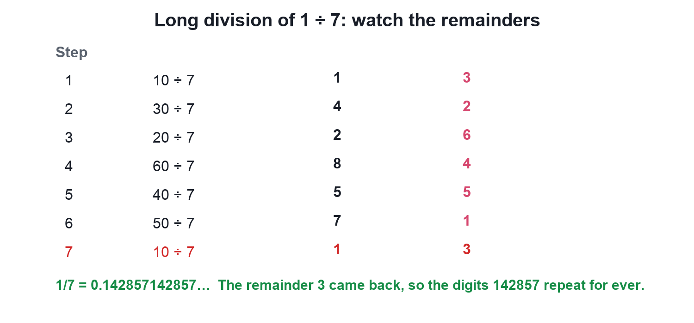
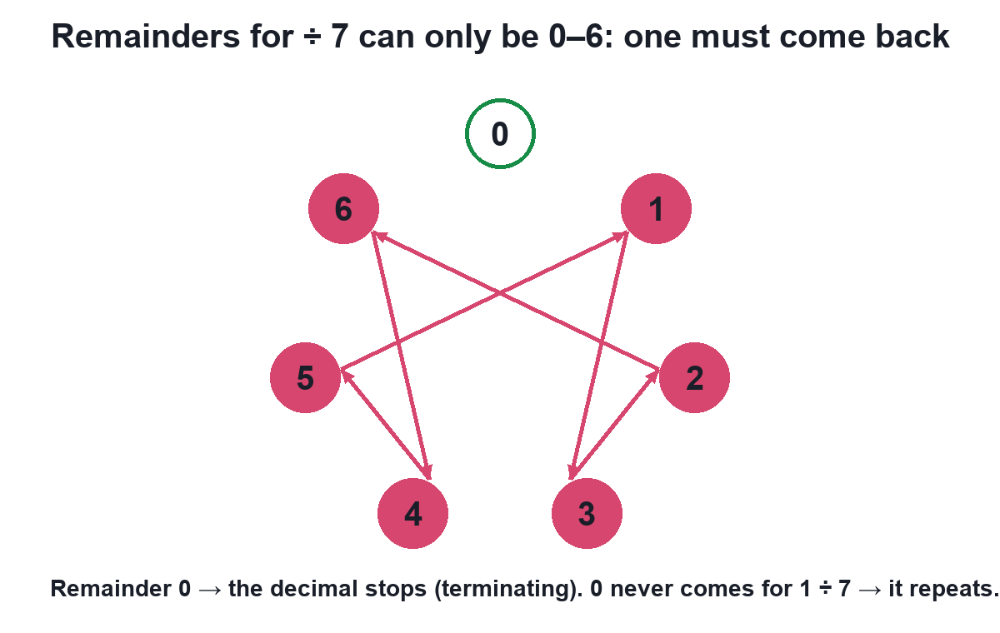
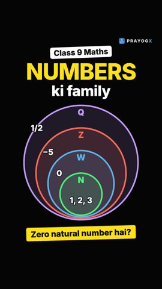
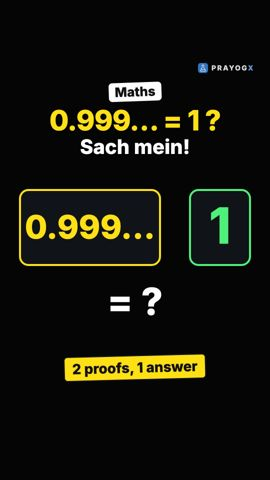
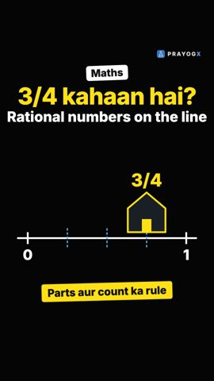
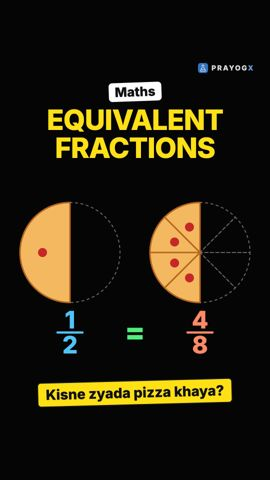

Terminating and Recurring Decimals
Video not playing? Watch on Instagram · YouTube
1/4 = 0.25 stops, but 1/3 = 0.333… never does. The remainders of long division decide: a remainder of 0 stops it, a returning remainder makes it repeat.
Download the short notesPDF, 158 KB · solved examples, practice set and answer key That's all the videos in this chapter so far Back to Number Systems
Key points
- Remainder becomes 0 → the decimal terminates.
- Remainders are always less than the divisor, so if 0 never comes, one must come back → the digits repeat.
- 1/7 = 0.142857 repeating (remainders 3, 2, 6, 4, 5, 1, then 3 again).
- In lowest form, a denominator with only 2s and 5s terminates; any other prime factor repeats.
- Rational ⇔ terminating or recurring; neither ⇒ irrational.
Why decimals stop or repeat
At every step of long division a remainder is left. If it becomes 0, the division stops. Dividing by q, the remainder can only be 0 to q − 1, so if 0 never comes, some remainder must come back, and from then on the digits repeat.


The shortcut
p/q in lowest form terminates ⇔ q = 2ᵐ × 5ⁿ
| Fraction | Denominator | Decimal |
|---|---|---|
| 3/12 = 1/4 | 2 × 2 | 0.25 |
| 7/20 | 2 × 2 × 5 | 0.35 |
| 1/6 | 2 × 3 | 0.1666… |
| 2/11 | 11 | 0.1818… |
Recurring decimal to p/q
Let x = 0.2727…; then 100x = 27.2727…, so 99x = 27 and x = 27/99 = 3/11.
Try it yourself
Goal: Divide any fraction and see whether its decimal terminates or repeats, and why.
- Set p and q with the + and − buttons, or pick an example.
- Press Divide and follow the long division step by step.
- Watch the remainders light up on the wheel.
- See whether the remainder reaches 0 (terminates) or comes back (repeats).
Quick quiz
5 questions. Choose an answer for each, then submit to see your score and the explanations.
More from Number Systems

Natural, Whole, Integers and Rational NumbersEach new family of numbers answers a question the old one could not, and every family lives inside the next: N ⊂ W ⊂ Z ⊂ Q.Mathematics
Why 0.999… Equals 10.999… with the 9s never stopping is exactly 1, not "a little less". Three short proofs show why.Mathematics
Rational Numbers on the Number LineTo place p/q, cut each unit into q equal parts and count p parts from 0: right for positive, left for negative.Mathematics · simulation
Equivalent Fractions and Comparing Rational Numbers1 slice of 2 or 4 slices of 8: who ate more pizza? Learn equivalent fractions, the LCM trick for comparing, and why −3/4 > −5/6.Mathematics · simulation